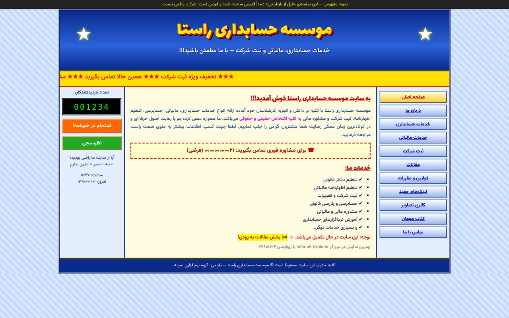
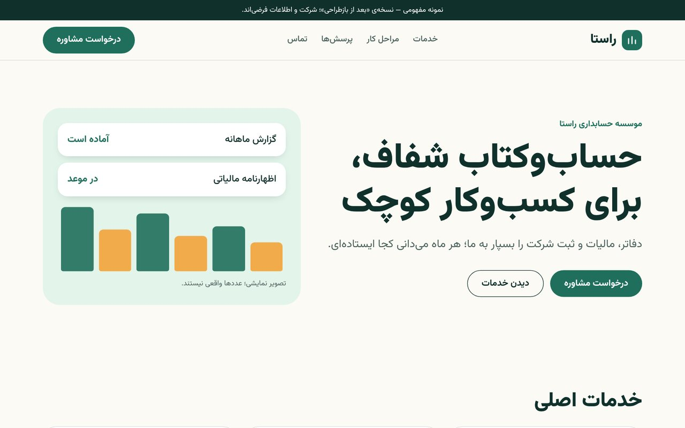
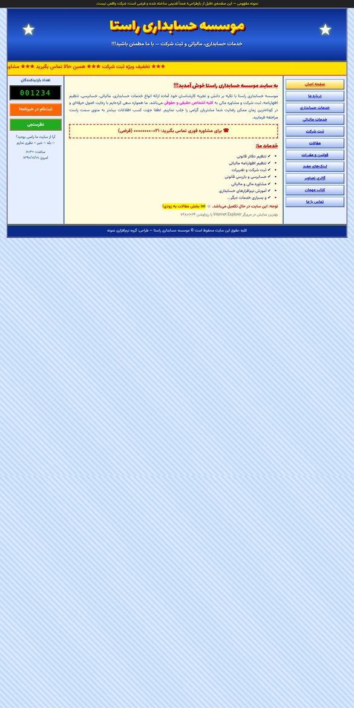
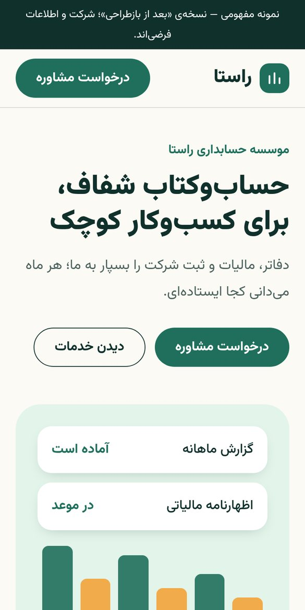

سایت قدیمی حسابداری، بازطراحیشده
یک سایت عمداً قدیمیِ فرضی را ساختم و همان محتوا را از صفر مرتب کردم: پیام روشنتر، متن خواناتر، موبایلپسند. شرکت، شمارهها و متنها فرضیاند.
قبل و بعد؛ دسکتاپ


چهار بهبود مشخص
یک پیام، یک اقدام
بهجای بنر چشمکزن و ۱۱ لینک، یک تیتر و دکمهی «درخواست مشاوره» دیده میشود. چهار لینک منو کافی است.
متن خوانا
متن از ۱۲ پیکسل به ۱۸ پیکسل رسیده، با فاصلهی سطر بیشتر و رنگ تیره روی زمینهی ساده. دیگر پسزمینهی راهراه و متن رنگی نیست.
موبایلپسند
نسخهی قبل با عرض ثابت ۹۸۰ پیکسل روی گوشی ریز میشود. نسخهی جدید چیدمان تکستونه و دکمههای قابل لمس دارد.
اعتماد با شفافیت
شمارنده و نظرسنجی حذف شد؛ بهجایش سه مرحلهی شروع کار و پرسشهای پرتکرار آمده تا مشتری بداند چه انتظاری داشته باشد.
روی موبایل


میخواهی خودت امتحان کنی؟ هر دو صفحهی نمونه باز میشوند:
سایتت قدیمی شده؟
لینک سایت فعلی را بفرست تا بگویم از کجا شروع کنیم. زمان و هزینه بعد از بررسی اعلام میشود.